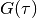
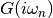
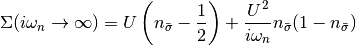
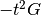
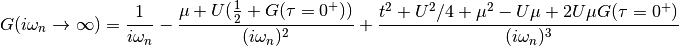

dmft.plot.hf_single_site¶
Plotting utilities for the Single site DMFT phase diagram¶
Functions¶
-
dmft.plot.hf_single_site.autocorrelation_function(spins_log)¶ Calculates the autocorrelation function of the auxiliary Ising fields
Parameters: spins_log (ndarray 1D or 2D) – Monte Carlo time evolution of the auxiliary Ising field Returns: Return type: ndarray
-
dmft.plot.hf_single_site.averager(sim_dir, observable, last_iterations)¶ Averages the observable arrays in sim_dir for the last_iterations
last_iteration is a list of folder names
-
dmft.plot.hf_single_site.collect_bined_saves()¶
-
dmft.plot.hf_single_site.energies(beta, filestr='SB_PM_B{}.h5')¶ returns the potential, and kinetic energy
Parameters: Returns: Contains, potential energy, Kinetic energy, values of U
Return type: tuple of 3 ndarrays
-
dmft.plot.hf_single_site.fit_dos(beta, avg, filestr='disk/SB_PM_B{}')¶ Fits for all Green’s functions at a given beta their density of states at the Fermi energy
Parameters: - beta (float inverse temperature) –
- avg (int number of last iterations to average over) –
Returns: Return type: arrays of Interaction, Fitted and source GF imaginary part
-
dmft.plot.hf_single_site.get_giw(sim_dir, iteration_slice, tau=None, w_n=None, setup=None)¶ Recovers with Fourier Transform G_iw from H5 file
Parameters: - h5parent (hdf5 group to go) –
- iteration_slice (list of iteration names to average over) –
- tau (1D real array time slices of HF data) –
- w_n (1D real array matsubara frequencies) –
Returns: tuple
Return type: , 
-
dmft.plot.hf_single_site.get_sigmaiw(h5parent, iteration, tau, w_n)¶ Returns the self-energy with the Dyson equation
-
dmft.plot.hf_single_site.gf_tail(gtau, U, mu)¶ Estimates the known first 3 moments of the tail
Starting from the high energy expansion of [self-energy]

Then in the Bethe lattice where the self consistency is  the Green function decays as

Parameters: - gtau (Imaginary Time Green function array) –
- U (float Local interaction) –
- mu (float chemical potential) –
Returns: Return type: list
References
[self-energy] : Gull, E. et al. Reviews of Modern Physics, 83(2), 384 http://dx.doi.org/10.1103/RevModPhys.83.349
-
dmft.plot.hf_single_site.glob(pathname, *, recursive=False)¶ Return a list of paths matching a pathname pattern.
The pattern may contain simple shell-style wildcards a la fnmatch. However, unlike fnmatch, filenames starting with a dot are special cases that are not matched by ‘*’ and ‘?’ patterns.
If recursive is true, the pattern ‘**’ will match any files and zero or more directories and subdirectories.
-
dmft.plot.hf_single_site.interpol(gtau, Lrang, add_edge=False, same_particle=False)¶ This function interpolates onto a different array
it keep track of the shape of the Greens functions in Beta^-.
Parameters:
-
dmft.plot.hf_single_site.label_convergence(beta, u_int, axes, graf, n_freq, xlim)¶ Label the axes of the common plot of the evolution of DMFT loops
-
dmft.plot.hf_single_site.list_show_conv(beta, filestr='SB_PM_B{}', n_freq=5, xlim=2, skip=5)¶ Plots in individual figures for all interactions the DMFT loops
-
dmft.plot.hf_single_site.phases(beta_array)¶ Scatter plot of the DOS at Fermi level
Shows the phase diagram of the impurity model of DMFT
-
dmft.plot.hf_single_site.plot_fit_dos(beta, avg, filestr='SB_PM_B{}', xlim=2)¶ Plot the evolution of the Green’s function in DMFT iterations
-
dmft.plot.hf_single_site.show_conv(beta, u_int, filestr='SB_{simt}_B{beta}', n_freq=5, xlim=2, skip=5, simt='PM')¶ Plot the evolution of the Green’s function in DMFT iterations
Classes¶
-
class
dmft.plot.hf_single_site.interp1d(x, y, kind='linear', axis=-1, copy=True, bounds_error=None, fill_value=nan, assume_sorted=False)¶ Interpolate a 1-D function.
x and y are arrays of values used to approximate some function f:
y = f(x). This class returns a function whose call method uses interpolation to find the value of new points.Note that calling interp1d with NaNs present in input values results in undefined behaviour.
Parameters: - x ((N,) array_like) – A 1-D array of real values.
- y ((..,N,..) array_like) – A N-D array of real values. The length of y along the interpolation axis must be equal to the length of x.
- kind (str or int, optional) – Specifies the kind of interpolation as a string (‘linear’, ‘nearest’, ‘zero’, ‘slinear’, ‘quadratic’, ‘cubic’ where ‘zero’, ‘slinear’, ‘quadratic’ and ‘cubic’ refer to a spline interpolation of zeroth, first, second or third order) or as an integer specifying the order of the spline interpolator to use. Default is ‘linear’.
- axis (int, optional) – Specifies the axis of y along which to interpolate. Interpolation defaults to the last axis of y.
- copy (bool, optional) – If True, the class makes internal copies of x and y. If False, references to x and y are used. The default is to copy.
- bounds_error (bool, optional) – If True, a ValueError is raised any time interpolation is attempted on a value outside of the range of x (where extrapolation is necessary). If False, out of bounds values are assigned fill_value. By default, an error is raised unless fill_value=”extrapolate”.
- fill_value (array-like or (array-like, array_like) or "extrapolate", optional) –
- if a ndarray (or float), this value will be used to fill in for requested points outside of the data range. If not provided, then the default is NaN. The array-like must broadcast properly to the dimensions of the non-interpolation axes.
- If a two-element tuple, then the first element is used as a
fill value for
x_new < x[0]and the second element is used forx_new > x[-1]. Anything that is not a 2-element tuple (e.g., list or ndarray, regardless of shape) is taken to be a single array-like argument meant to be used for both bounds asbelow, above = fill_value, fill_value.New in version 0.17.0.
- If “extrapolate”, then points outside the data range will be
extrapolated.
New in version 0.17.0.
- assume_sorted (bool, optional) – If False, values of x can be in any order and they are sorted first. If True, x has to be an array of monotonically increasing values.
-
__call__()¶
See also
splrep,splevUnivariateSpline- An object-oriented wrapper of the FITPACK routines.
interp2d- 2-D interpolation
Examples
>>> import matplotlib.pyplot as plt >>> from scipy import interpolate >>> x = np.arange(0, 10) >>> y = np.exp(-x/3.0) >>> f = interpolate.interp1d(x, y)
>>> xnew = np.arange(0, 9, 0.1) >>> ynew = f(xnew) # use interpolation function returned by `interp1d` >>> plt.plot(x, y, 'o', xnew, ynew, '-') >>> plt.show()